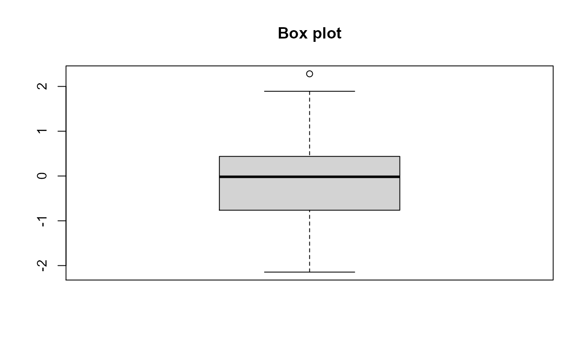
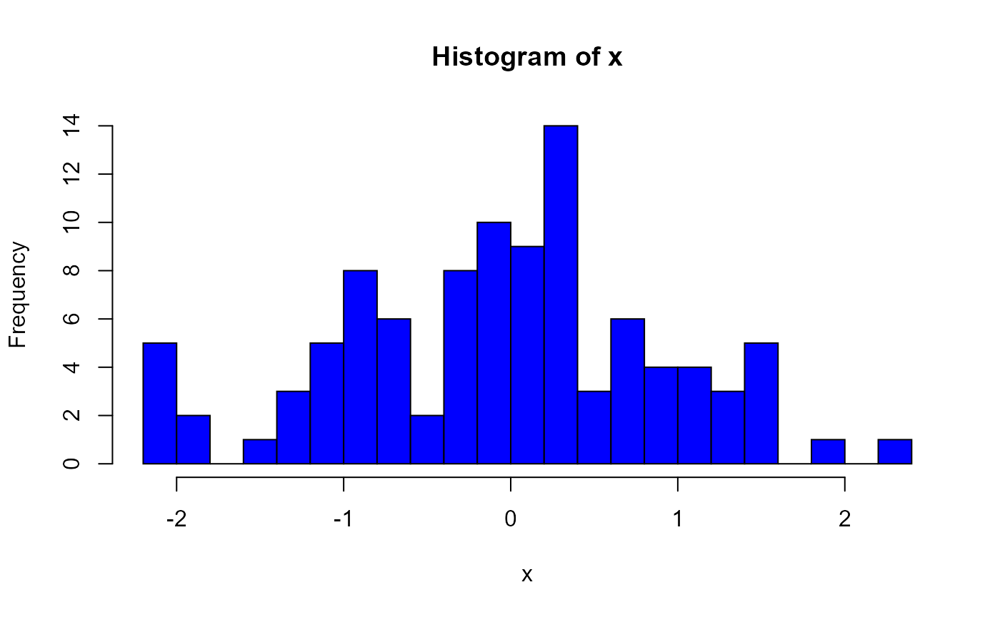

R_Basics.Rmd你可以像使用计算器一样使用R：
1 / 200 * 30 #> [1] 0.15 (59 + 73 + 2) / 3 #> [1] 44.66667 2 ^ 2 #> [1] 4 sin(pi / 2) #> [1] 1
你可以创建一个变量并使用<-进行赋值
x <- 3 * 4
R语言中的变量名称必须以字母开头，并且只能包含字母，数字，下划线_以及.
为了让变量名更加有意义，往往需要多个单词，建议使用_进行分隔或者使用驼峰命名法
i_use_snake_case otherPeopleUseCamelCase some.people.use.periods And_aFew.People_RENOUNCEconvention
x #> [1] 12
a + b #> [1] 6 8 10 12 14
- R里面几乎所有的运算符的都支持向量化操作
- 如果两个向量长度不一样，会发生什么？
c(1, 3, 6, 10, 15) + c(0, 1, 3, 6)
R语言支持四种特殊值：-Inf(负无穷), Inf(正无穷), NaN(非数字, Not A Number), NA (缺失值, Not Available)
c(Inf + 1, Inf - 1, Inf - Inf) #> [1] Inf Inf NaN c(1 / Inf, Inf / 1, Inf / Inf) #> [1] 0 Inf NaN c(sqrt(Inf), sin(Inf)) #> Warning in sin(Inf): NaNs produced #> [1] Inf NaN c(NA + 1, NA * 5, NA + Inf) #> [1] NA NA NA
同时，R语言也提供了4个函数来检查这些特殊值：
R里面有三种逻辑状态：TRUE(T)、FALSE(F)、NA
同时R也提供了三个向量化的逻辑运算符：
x <- c(T, F, NA) xy <- expand.grid(x = x, y = x) within( xy, { and <- x & y or <- x | y not.y <- !y not.x <- !x } ) #> x y not.x not.y or and #> 1 TRUE TRUE FALSE FALSE TRUE TRUE #> 2 FALSE TRUE TRUE FALSE TRUE FALSE #> 3 NA TRUE NA FALSE TRUE NA #> 4 TRUE FALSE FALSE TRUE TRUE FALSE #> 5 FALSE FALSE TRUE TRUE FALSE FALSE #> 6 NA FALSE NA TRUE NA FALSE #> 7 TRUE NA FALSE NA TRUE NA #> 8 FALSE NA TRUE NA NA FALSE #> 9 NA NA NA NA NA NA
# Compare numbers (==, >=, !=, <=, <, >) # ?comprison sqrt(2) ^ 2 == 2 # T or F? #> [1] FALSE all.equal(sqrt(2) ^ 2, 2) # if TRUE, it will return TRUE #> [1] TRUE # all.equal(sqrt(2), 3) # if FALSE, it will report the difference. isTRUE(all.equal(sqrt(2), 3)) #> [1] FALSE
比较数字是否相同，不要使用==，使用all.equal函数。
R中所有的变量都有一个类，表明此变量属于什么类型。 在R中，最小的数据类型是原子向量（Atomic）
#> [1] "array" "atomic" "call" "character"
#> [5] "complex" "Coord" "data" "Date"
#> [9] "difftime" "double" "duration" "element"
#> [13] "empty" "environment" "expression" "facet"
#> [17] "factor" "finite" "function" "ggplot"
#> [21] "ggproto" "grouped_df" "infinite" "instant"
#> [25] "integer" "interval" "language" "leaf"
#> [29] "list" "loaded" "logical" "matrix"
#> [33] "mts" "na" "name" "nan"
#> [37] "null" "numeric" "numeric_version" "object"
#> [41] "ordered" "package_version" "pairlist" "period"
#> [45] "POSIXct" "POSIXlt" "POSIXt" "primitive"
#> [49] "qr" "R" "raster" "raw"
#> [53] "recursive" "relistable" "single" "src"
#> [57] "stepfun" "symbol" "table" "tbl"
#> [61] "theme" "tibble" "timepoint" "timespan"
#> [65] "ts" "tskernel" "unsorted" "vector"R里面也提供了大量的函数来判断数据类型。
#> [1] "is.array" "is.atomic"
#> [3] "is.call" "is.character"
#> [5] "is.complex" "is.Coord"
#> [7] "is.data.frame" "is.Date"
#> [9] "is.difftime" "is.double"
#> [11] "is.duration" "is.element"
#> [13] "is.empty.model" "is.environment"
#> [15] "is.expression" "is.facet"
#> [17] "is.factor" "is.finite"
#> [19] "is.function" "is.ggplot"
#> [21] "is.ggproto" "is.grouped_df"
#> [23] "is.infinite" "is.instant"
#> [25] "is.integer" "is.interval"
#> [27] "is.language" "is.leaf"
#> [29] "is.list" "is.loaded"
#> [31] "is.logical" "is.matrix"
#> [33] "is.mts" "is.na"
#> [35] "is.na.data.frame" "is.na.numeric_version"
#> [37] "is.na.POSIXlt" "is.na<-"
#> [39] "is.na<-.default" "is.na<-.factor"
#> [41] "is.na<-.numeric_version" "is.name"
#> [43] "is.nan" "is.null"
#> [45] "is.numeric" "is.numeric.Date"
#> [47] "is.numeric.difftime" "is.numeric.POSIXt"
#> [49] "is.numeric_version" "is.object"R里面提供了很多的函数来进行数据类型的转换。
#> [1] "as.array" "as.array.default"
#> [3] "as.call" "as.character"
#> [5] "as.character.condition" "as.character.Date"
#> [7] "as.character.default" "as.character.error"
#> [9] "as.character.factor" "as.character.hexmode"
#> [11] "as.character.numeric_version" "as.character.octmode"
#> [13] "as.character.POSIXt" "as.character.srcref"
#> [15] "as.col_spec" "as.complex"
#> [17] "as.data.frame" "as.data.frame.array"
#> [19] "as.data.frame.AsIs" "as.data.frame.character"
#> [21] "as.data.frame.complex" "as.data.frame.data.frame"
#> [23] "as.data.frame.Date" "as.data.frame.default"
#> [25] "as.data.frame.difftime" "as.data.frame.factor"
#> [27] "as.data.frame.integer" "as.data.frame.list"
#> [29] "as.data.frame.logical" "as.data.frame.matrix"
#> [31] "as.data.frame.model.matrix" "as.data.frame.noquote"
#> [33] "as.data.frame.numeric" "as.data.frame.numeric_version"
#> [35] "as.data.frame.ordered" "as.data.frame.POSIXct"
#> [37] "as.data.frame.POSIXlt" "as.data.frame.raw"
#> [39] "as.data.frame.table" "as.data.frame.ts"
#> [41] "as.data.frame.vector" "as.Date"
#> [43] "as.Date.character" "as.Date.default"
#> [45] "as.Date.factor" "as.Date.numeric"
#> [47] "as.Date.POSIXct" "as.Date.POSIXlt"
#> [49] "as.dendrogram" "as.difftime"R里面所有的变量都有一个类，一般来说可以使用class()来获取某一对象的类型。
R语言有5种基本的数据结构，分别是：向量（vector）、矩阵（matrix）、 数组（array）、列表（list）和数据框（data.frame）
knitr::include_graphics('./Figures/data_type.jpg')
数据类型
a <- c(1, 2, 5, 3, 6, -2, 4) # numeric vector b <- c("one", "two", "three") # character vector c <- c(TRUE, TRUE, TRUE) # logical vector
a <- 1:10 a[c(1, 3, 5)] # 1st, 3rd and 5th elements in a #> [1] 1 3 5 a[a > 3] # list all the elements larger than 3 in a #> [1] 4 5 6 7 8 9 10 a[-c(1:3)] # eliminate the first 3 elements in a #> [1] 4 5 6 7 8 9 10 a * a # element-wise manipulation #> [1] 1 4 9 16 25 36 49 64 81 100 length(a) # the length of the vector #> [1] 10 b <- c(apple = 1, banana = 2, 'kiwi fruit' = 3, 4) b #> apple banana kiwi fruit #> 1 2 3 4
list()来创建mydata <- data.frame(patientID = c(1, 2, 3, 4), age = c(25, 34, 28, 52), diabetes = c("Type1", "Type2","Type1","Type1"), status = c("Poor", "Improved", "Excellent", "Poor") ) head(mydata, 3) #> patientID age diabetes status #> 1 1 25 Type1 Poor #> 2 2 34 Type2 Improved #> 3 3 28 Type1 Excellent
数据库里的不同列的数据长度须一致，相同列的数据类型须一致
R语言原生的data.table处理规模较大的数据时速度较慢，可以用data.table代替。后续课程会详细介绍。
R语言中有大量的内置函数，同时也有大量的第三方程序包提供的函数，他们调用的方式都相同：
function_name(arg1 = val1, arg2 = val2, ...)
我们尝试使用seq()来生成1到10的一个向量。
x <- seq(1, 10) x #> [1] 1 2 3 4 5 6 7 8 9 10
使用?Control来查看R支持的控制流程
for(var in seq) expr while(cond) expr repeat expr
for (i in 1:5) { print(i) } #> [1] 1 #> [1] 2 #> [1] 3 #> [1] 4 #> [1] 5
*apply函数A <- matrix(rnorm(18), 3, 6) A #> [,1] [,2] [,3] [,4] [,5] [,6] #> [1,] 1.61983942 -1.2734657 1.5298122 -0.1219661 0.3349575 -0.3188670 #> [2,] 0.02556788 -0.1824574 -0.2530675 0.4686020 -1.8840924 0.3099761 #> [3,] 1.97458316 1.2555045 0.3959899 0.2223678 0.7081877 0.2124445 for (i in 1:ncol(A)){ print(mean(A[, i])) } #> [1] 1.206663 #> [1] -0.06680618 #> [1] 0.5575782 #> [1] 0.1896679 #> [1] -0.2803157 #> [1] 0.06785122 apply(A, 2, mean) #> [1] 1.20666349 -0.06680618 0.55757822 0.18966791 -0.28031574 0.06785122
??apply查看所有apply函数#> Min. 1st Qu. Median Mean 3rd Qu. Max.
#> -2.14584 -0.76315 -0.01751 -0.07299 0.43626 2.28173
library(data.table) set.seed(12345) random_dt <- data.table(weight = round(c(rnorm(10, 0, 1), rnorm(10, 2, 1)), 3), group = rep(c('ctrl', 'case'), each = 10)) t.test(weight ~ group, random_dt) #> #> Welch Two Sample t-test #> #> data: weight by group #> t = 6.5335, df = 17.979, p-value = 3.873e-06 #> alternative hypothesis: true difference in means is not equal to 0 #> 95 percent confidence interval: #> 1.640945 3.196655 #> sample estimates: #> mean in group case mean in group ctrl #> 2.2860 -0.1328